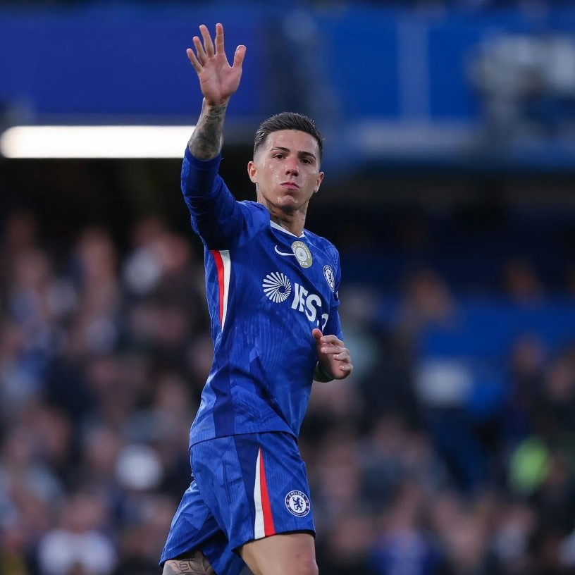

Introducción
Enzo Jeremías Fernández es un futbolista argentino. Juega como mediocampista y es reconocido por su inteligencia táctica, visión de juego y precisión en los pases.

Mediocampista · Chelsea · Argentina
Nacido el 17 de enero de 2001 en San Martín, Buenos Aires. Campeón del mundo con Argentina en Qatar 2022 y Mejor Jugador Joven del torneo.
Enzo Jeremías Fernández es un futbolista argentino. Juega como mediocampista y es reconocido por su inteligencia táctica, visión de juego y precisión en los pases.
Nació en San Martín, Buenos Aires. Desde pequeño jugaba al fútbol en su barrio y mostró un talento notable. Creció en un entorno familiar humilde donde el esfuerzo fue clave en su desarrollo.
Ingresó a las divisiones inferiores de River Plate siendo muy joven. Allí aprendió disciplina, táctica y técnica. Su crecimiento fue progresivo hasta llegar al primer equipo.
Fue cedido a Defensa y Justicia para sumar minutos. En este equipo logró destacarse y ganar experiencia profesional. Fue una etapa clave para su evolución como jugador.
Al volver a River, se consolidó como titular y su rendimiento llamó la atención de clubes europeos. Fue transferido al Benfica de Portugal, donde se destacó rápidamente en competencias internacionales.
Tras el Mundial 2022, fue fichado por el Chelsea en una de las transferencias más altas para un jugador joven. En la Premier League continúa desarrollando su carrera a gran nivel.
Debutó con la selección mayor y participó en el Mundial 2022. Marcó un gol importante y tuvo actuaciones destacadas. Argentina se consagró campeona del mundo.
Fue elegido mejor jugador joven del Mundial 2022. Es considerado uno de los mejores mediocampistas jóvenes del mundo, con gran proyección en el fútbol internacional.